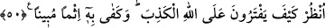

göstermeye çalışan şu yahûdîlere bakmadın mı?” demektir. Yâni, onlara bir bak da,
inkar ve büyük günah üzere oldukları halde kendilerinin Allah katında tertemiz
oldukları iddiâlarına ve hallerine hayret et!
Buradaki lafız umumîdir. Nefsini temize çıkaran ve çok takvâlı, itâatkar ve Allah’a
yakın olmakla tavsif eden herkesi şâmildir. Ayrıca bu ifadede kişi, amelini beğenmekten
sakındırılmaktadır.
“Hayır”, onlar yalancılıkları ve bâtıl i’tikadları yüzünden nefislerini temize
gerçekten çıkaramazlar, “Allah dilediğini”, kendilerinden râzı olduğu mü’min
kullarından temize çıkarılmaya lâyık olanlardan istediklerini “temize çıkarır.” Çünkü
O, insanda gizli bulunan güzellik ve çirkinlikleri bilir. Yahûdîleri de sâhip oldukları
çirkin vasıflarla tavsif etmişti. “Ve hiç kimse kıl payı kadar haksızlık görmez.” Yâni,
onlar bu çirkin davranışları yüzünden cezâlandırılırlar, ancak bu cezâda onlara en
küçük, en ufak bir haksızlık bile yapılmaz. “Fetîl” hurma çekirdeğinin ortasındaki iptir.
Azlığı ve önemsizliği vurgulamak için misal getirilir.
Cezâya çarptırılana zulüm, hak ettiğinden fazla cezâlandırmaktır. Mükâfâtlandırılana
zulüm ise hak ettiğinden az mükâfât vermektir.
50- Bak, nasıl da Allah’a yalan yere iftirâda bulunuyorlar; apaçık bir günah
olarak bu (onlara) yeter!
“Bak nasıl da”, hangi durumda ve ne şekilde kendilerinin Allah’ın oğulları
olduklarını ve O’nun katında temiz bulunduklarını iddiâ ederek “Allah’a yalan yere
iftirâda bulunuyorlar?” iftirâ yalandan başka bir şey olmadığı halde, burada açıkça
“yalan” lafzının zikredilmesi, onların durumlarının çirkinliğini mübâlağalı bir şekilde
göstermek içindir. Kendilerini temize çıkarmaları ve diğer büyük günahları bir tarafa
bırakılsa bile, Allah Teâlâ’ya iftirâ olduğu için bu iftirâları “apaçık bir günah olarak
(onlara) bu yeter.” Bu iftirâdan başka hiçbir günahları olmasa bile yahûdîlerin bütün
inkarcılardan daha günahkar olmalarına yeter ve büyük bir günah olurdu.
İmam Ebû Mansûr (rh.a.) diyor ki: “Bir kimsenin “Ben mü’minim” demesi nefsini
temize çıkartmak mânâsına gelmez. Bilakis kendisine ikram edilen bir şeyi haber
vermekten ibârettir. Kendini temize çıkartmak, kendini müttakî ve sâlih biri olarak
görmek ve bununla övünmektir.”
Seriyy Sakatî (k.s.) şöyle demiştir: “Kendisinde olmayan vasıflarla insanların
karşısında süslenen kimse, Allah’ın gözünden düşer.”
Şu halde mü’min bir kulun nefsini övmekten sakınması lazımdır. Görmez misin ki Hz.
Peygamber (s.a.v.) “Ben, Âdemoğullarının efendisiyim.” buyurduktan sonra hemen
ardından “Ancak övünmek yok!”[46] diye eklemiştir. Yâni, ben bunu insanların